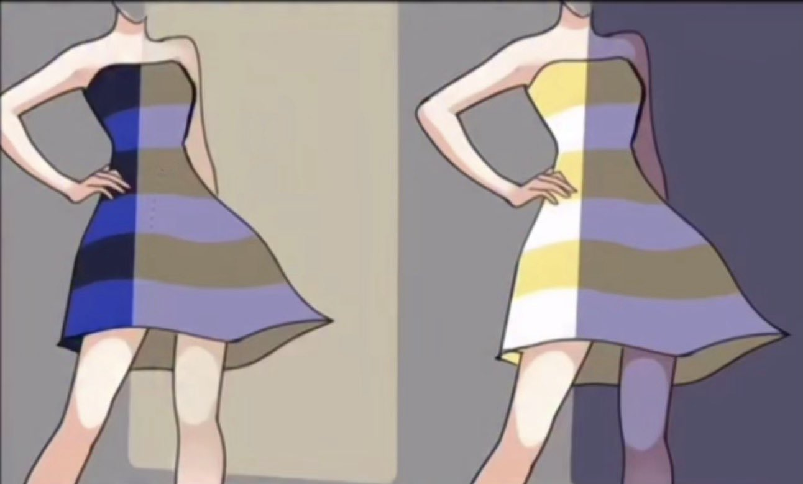
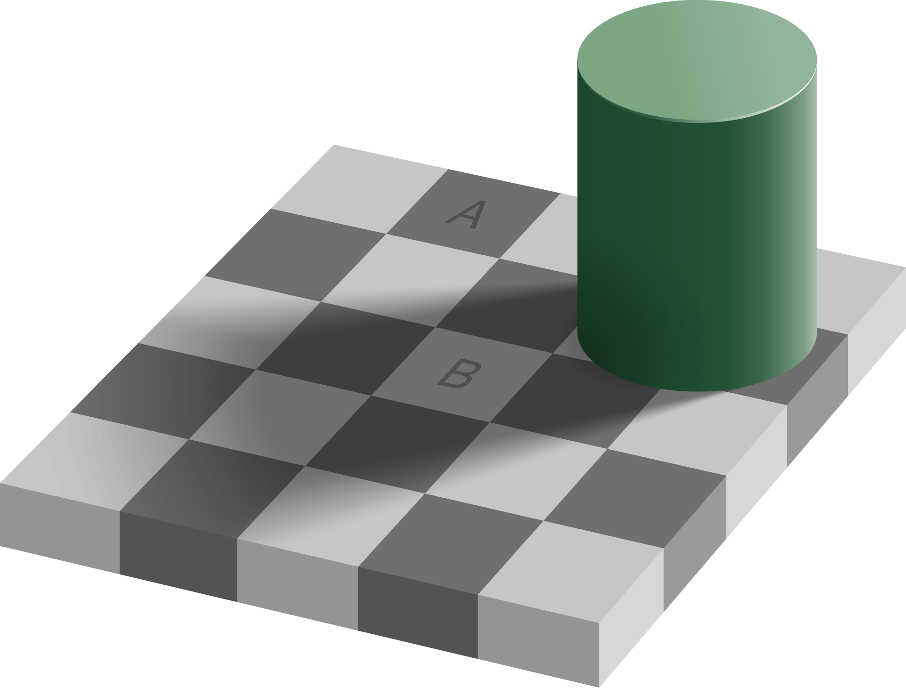
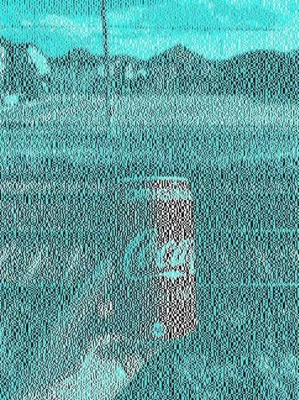

Your Eyes Are Liars
Posted on 2026-05-22 in code
You don't see reality. You see your brain's best guess.
We like to think our eyes work like cameras, faithfully recording the world as it is. They don't. What you perceive is a heavily processed, context-dependent interpretation constructed by your brain, and it can be easy to fool.
Here are a few of my favorite demonstrations.
The Dress
In 2015, a single photo of a dress broke the internet. Some people saw it as blue and black; others were equally certain it was white and gold. Same pixels, same image, wildly different perceptions. Initially I was among those who saw it one way, and could not make myself see it the other.

The cause? Your visual system is trying to discount the illumination in the scene — essentially guessing what kind of light is falling on the dress and subtracting it out. Depending on whether your brain assumes the dress is in shadow (bluish ambient light) or direct warm light, you get a completely different answer. Neither group is "wrong." They're just making different unconscious assumptions about context that was never specified.
Adelson's Checker Shadow
Look at squares A and B on this checkerboard. One is clearly darker than the other, right?

They are the exact same shade of gray. Your brain "knows" that B is in a shadow, so it compensates by perceiving it as lighter than it actually is. This is very useful in the real world - it's how you recognize that a white shirt is still white whether it's in sunlight or in shadow - but it means the raw color values hitting your retina are not what you consciously experience.
Context-Dependent Color
The same principle applies to color perception more broadly. A patch of color will look completely different depending on what surrounds it.

Your visual system doesn't evaluate color in isolation — it evaluates color relative to its surroundings. Change the surrounding context and your perception of the target color shifts, even though nothing about the target itself has changed.
Why it matters
These aren't just optical illusions or party tricks. They reveal something fundamental about human perception: our perceptions of the world are not passive recording. They are active, constructive, and deeply shaped by context and prior assumptions. Our brains are constantly making educated guesses, and most of the time those guesses are good enough that you never notice. But "good enough" is not the same as "accurate."
It's a humbling reminder. The next time you're certain about what you saw - whether it's a color, a face in a crowd, or an event you witnessed - remember that your brain filled in more of the picture than you'd like to admit.
Walk on,
Bitpusher
\`._,'/
(_- -_)
\o/